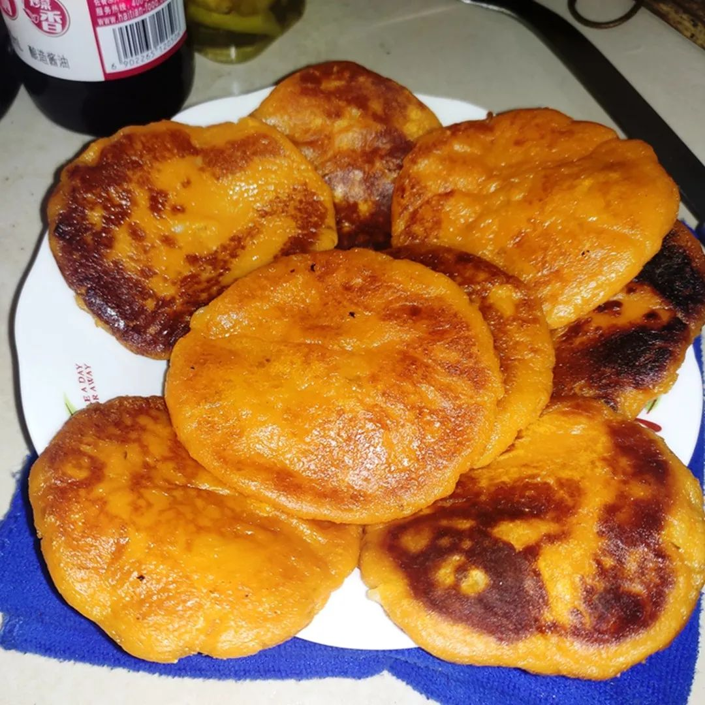
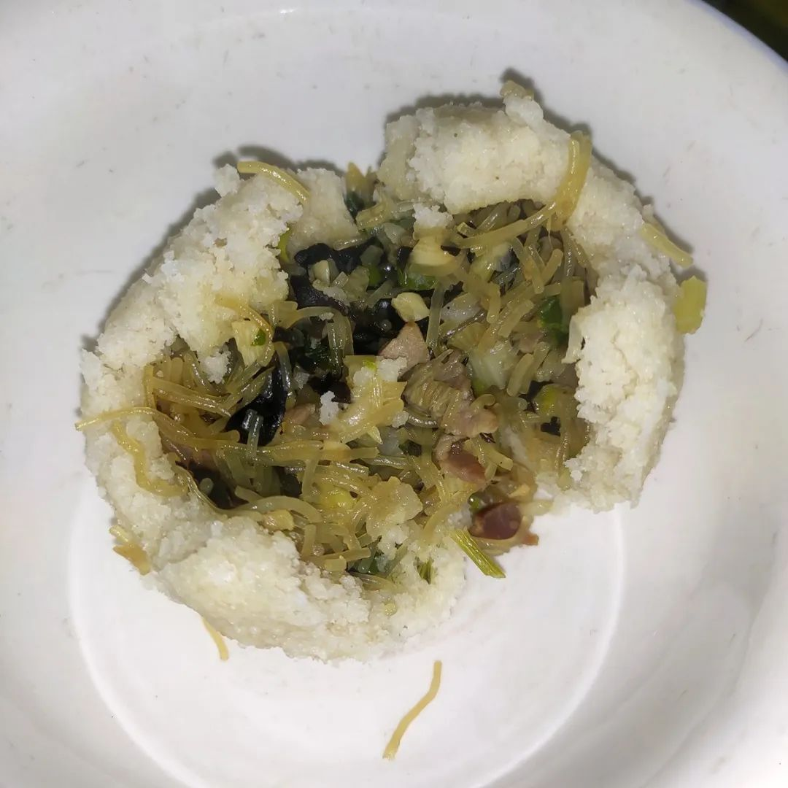

11例病理解剖3例完成初步诊断，死者肺部有黏液性分泌物，输氧治疗需更小心 | 深度聚焦
原文链接 备份链接 记者/韩谦 魏晓涵 *编辑/石爱华宋建华* 进行病理解剖的刘良团队 经历了一个多月的等待后，华中科技大学同济医学院法医病理学教授刘良带领的团队，于2月16日凌晨3点50分，完成了第一例新冠肺炎死亡病例的尸体解剖。 截 …

2020年2月25日。
农历二月初三。
武汉封城第三十四天。
天门封城第三十三天。
8点被婆婆喊起来，说出大太阳，赶紧把你被子换洗掉。果然一天都是好太阳，至晚上，竟淅沥沥落雨了。小方伯去社区帮忙，大方伯今天主厨，做了红薯粑粑和月半团子。拍照发在群里，惹得一阵口水。不过果果你们一家已经涮上火锅了是神马情况？还有姨姨你身在疫区居然能吃到KFC和蛋黄酥？ 另外刘老师你返汉申请第二天批下来就回了？今夕何夕？我怕是乱炖吃昏头了。




今日看到此念《生命·成长》更新了尹烨的最新一期，虽觉老生常谈，仍喜欢理科生谈话那股笃定气壮，比起梁某人就委婉许多了。对，最初也是因为梁冬，从收音机就开始听的冬吴相对论，到冬吴同学会，再到《生命·觉者》视频，以及最新的此念《生命·成长》系列，一路追来大受裨益。虽然这季主题是家庭教育和亲子关系，我个“万年青”倒也看得津津有味。布施大家，无量随喜。


今日还看到，在斯台普斯中心举行的科比追思会上，乔丹回忆起科比的点点滴滴，含泪读到：
“No one knows how much time we have. That’s why we must live in the moment, we must enjoy the moment, we must reach and see and spend as much time as we can with our families and friends and the people that we absolutely love. ”
“ To live in the moment means to enjoy each and every one that we come in contact with.”
“When Kobe Bryant died, a piece of me died. And as I look in this arena and across the globe, a piece of you died, or else you wouldn’t be here. Those are the memories that we have to live with and we learn from…”
“没人知道我们还有多少时间，所以我们必须活在当下，享受当下。我们必须尽可能花时间去好好陪伴我们的家人和朋友，我们所爱的人。”
“活在当下，意味着我们要享受每一次联系（相处的时光）。”
“当科比去世，我内心的一部分也死了。我看着这个球馆，看向全世界，我知道你们生命中的一部分也死了，否则你们不会在这里。而这些是我们曾经和他一起生活，并向他学习…”

今日还读到，金圣叹假施耐庵评水浒序言道：“朝日初出，苍苍凉凉，澡头面，裹巾帻，进盘飧，嚼杨木。诸事甫毕，起问可中？中已久矣！中前如此，中后可知。一日如此，三万六千日何有？以此思忧，竟何所得乐矣？每怪人言某甲于今若干岁。夫若干者，积而有之之谓。今其岁积在何许？可取而数之否？可见已往之吾，悉已变灭。不宁如是，吾书至此句，此句以前已疾变灭。是以可痛也！”


水妈
长按二维码向我转账
受苹果公司新规定影响，微信 iOS 版的赞赏功能被关闭，可通过二维码转账支持公众号。
文章已于修改
原文链接 备份链接 记者/韩谦 魏晓涵 *编辑/石爱华宋建华* 进行病理解剖的刘良团队 经历了一个多月的等待后，华中科技大学同济医学院法医病理学教授刘良带领的团队，于2月16日凌晨3点50分，完成了第一例新冠肺炎死亡病例的尸体解剖。 截 …
原文链接 备份链接 疫情不仅严重影响了企业复工，多家A股公司年报披露也因此延期。作为此次疫情重灾区，湖北省内上市公司年报披露所受影响正逐步显现 文 |《财经》记者 张建锋 王颖 编辑 | 陆玲 突然袭来的新型冠状病毒，不仅严重影响了企业复 …
原文链接 备份链接 ********** *****如在看素材、写脚本的过程中，秦晓宇不断地感受到疫情之下人们生发出的恐惧和爱意。他坚信，这种爱意，恰恰是我们克服恐惧，克服冷漠、自私和敌意的力量。***** 《余生一日》投稿作品截图。 …
原文链接 备份链接 「应收尽收」的当下，武汉最惊心动魄的战场已经转移到了重症病房。2月22日下午5点，华中科技大学同济医学院附属同济医院光谷院区的ICU病区里，医生办公室的大屏幕正监控着每张病床的情况。11床和19床的患者刚刚去世，护士在 …
原文链接 备份链接 2020年1月24日以后，传染病网络直报系统在对各地的疫情信息上报、汇总，以及疫情整体的防控非常重要，但仍需进一步改善上报机制、监测系统过于繁复等问题 文 |《财经》特派武汉记者 信娜 王小 《财经》 …